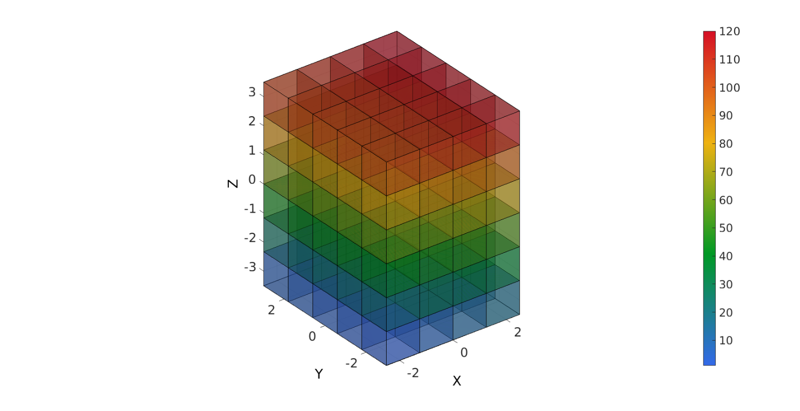

element2patch
Below is a demonstration of the features of the element2patch function
Contents
Syntax
[F,CF]=element2patch(E,C,elementType);
Description
Use element2patch to generate patch data for the faces of an element set such as tetrahedral or hexahedral elements. The output patch data can be visualized using gpatch. The inputs are the element array E, and optionally also color data on the elements C, and the elementType (e.g. tet4, tet10, hex8). The output consists of the element faces F and the colordata for the elements sampled at the faces CF.
Examples
PLOT SETTINGS
fontSize=20; faceAlpha1=1; faceAlpha2=0.5;
Example: Visualizing a hexahedral mesh
Creating example geometry
boxDim=[5 6 7];
boxEl=[4 5 6];
[meshStruct]=hexMeshBox(boxDim,boxEl);
E=meshStruct.E;
V=meshStruct.V;
C=(1:1:size(E,1))'; %Example data on elements, e.g. element number or stress
Using element2patch to obtain patch data for plotting
[F,CF]=element2patch(E,C,'hex8');
Plotting model
cFigure; gpatch(F,V,CF,'k',0.5); axisGeom(gca,fontSize); camlight headlight; colormap gjet; colorbar; drawnow;

GIBBON www.gibboncode.org
Kevin Mattheus Moerman, gibbon.toolbox@gmail.com
GIBBON footer text
License: https://github.com/gibbonCode/GIBBON/blob/master/LICENSE
GIBBON: The Geometry and Image-based Bioengineering add-On. A toolbox for image segmentation, image-based modeling, meshing, and finite element analysis.
Copyright (C) 2018 Kevin Mattheus Moerman
This program is free software: you can redistribute it and/or modify it under the terms of the GNU General Public License as published by the Free Software Foundation, either version 3 of the License, or (at your option) any later version.
This program is distributed in the hope that it will be useful, but WITHOUT ANY WARRANTY; without even the implied warranty of MERCHANTABILITY or FITNESS FOR A PARTICULAR PURPOSE. See the GNU General Public License for more details.
You should have received a copy of the GNU General Public License along with this program. If not, see http://www.gnu.org/licenses/.